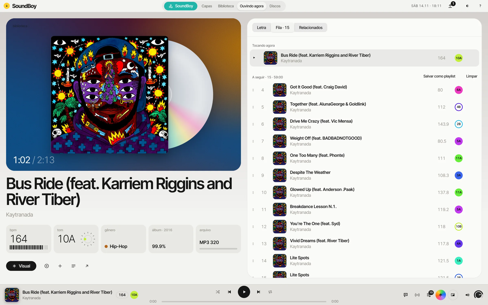

Sua música.
Em primeiro plano.
Os discos que marcaram você.
Um novo jeito de se perder neles.

É voltar a sentir
o que fez você
guardar aquela música.
O FLAC que você procurou por semanas. A demo que ninguém mais tem. O disco que atravessou a sua vida. Sua coleção tem história. O SoundBoy dá a ela espaço para acontecer.
Um outro lado
de cada disco.
O SoundBoy tira as cores da capa e transforma em luz. Ela respira no andamento da música e para quando você pausa. O CD sai da capa e gira enquanto toca. Do lado, BPM, tom e qualidade do arquivo, pra quem gosta de saber o que está ouvindo.

A cor do disco. O clima da música.
A paleta da capa vira luz. BPM, tom e qualidade ficam por perto.
Uma coleção para se perder.
Seus álbuns em uma estante visual. Escolher o próximo disco faz parte do prazer.

O ritual também é digital.
Vinil, CD ou picture disc. Um novo encontro com o álbum inteiro.
Tela 1 de 3: Ouvindo agora
Por trás da música.
Mais história.
Foto, bio e links oficiais. As suas mais tocadas. Álbuns separados de remixes, edits e participações, porque a discografia de verdade não é a mesma coisa que a pasta de downloads. E quando o programa erra, você corrige.


Menos cópias.
Mais coleção.
Todo mundo tem. O SoundBoy acha as cópias, sugere ficar com a de melhor qualidade (WAV e FLAC na frente), deixa você ouvir uma prévia de cada versão e escolher. As cópias somem das listas. Nenhum arquivo é apagado sem você mandar.

O ritual também
é digital.
Vinil, CD, picture disc. O disco gira no BPM da música, com a capa no selo. Dá pra trocar de aparelho, escolher o disco na estante e gravar um trecho.
O dia termina.
A música continua.
O modo noturno deixa tudo escuro e só a música brilha. Um botão no topo troca, e o SoundBoy lembra da sua escolha.

Deslize para explorar duas telas reais do aplicativo.
O cuidado está
nos detalhes.
Dê play
no que é seu.
Gratuito para Windows 10 e 11. Instala sem administrador.
O instalador oficial do SoundBoy, disponível na página de versões.
O instalador ainda não tem assinatura digital. Se o Windows exibir um aviso, confira a origem do arquivo na página oficial de versões antes de instalar.
Na primeira vez, o SoundBoy procura as músicas do computador e monta a biblioteca. Nada é movido nem apagado.
Vision, o simulador de DJ, está a caminho.